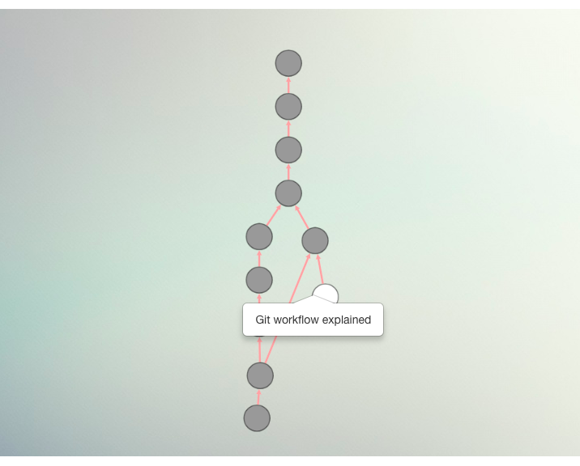

Saumitra Khanwalker
I graduated from NIT Nagpur with a Computer Science degree and have worked almost exclusively at startups since then. I call myself an imaginative rationalist; basically creativity + technology usually amplifies the quality of my output.
In college, I co-founded a pioneering app for college communication that has gone on to become a part of the college culture.
I now work at Suprdaily (Swiggy, YC W'17) as a senior front-end engineer.
Recent projects
Proso.io
Engineering education should be centered around solving real problems. With Proso.io, I work with non-profits and build software for them along with young engineers looking to learn. Know more..
Creating User Centered Flows in Ecommerce Design

In the ecommerce industry, driving differentiated user experience matters more than ever before. In an Amazon world, if you are a commodity player, you lose. Brands have to find ways to establish differentiation by creating experiences that reflect a deep understanding of their target persona. Read more..
Optimising Image Loads - A Case Study

Research studies have consistently shown that site speed is one of the most crucial factors that impact your engagement and conversion rates. Simply stated, the faster your website loads, the better your conversions, and therefore, your sales revenues. All else being equal, no other metric has a more direct and tangible impact on your bottom-line. On mobile devices, the constraints with smaller screen sizes and limited network bandwidths only serve to underline that concern even more. And given that the vast majority of your traffic is now on a mobile device, the negative impact of a site with poor loading speeds can be devastating. Read more..
Follow This 3-Step Process to Hire the Web Developer of Your Dreams

While web developers have a very specialized role within the software industry, their hiring process remains largely identical to the general software development hiring process. This results in a big disconnect between what web developers get tested on in the hiring process and the work they do once they come in. Read more..
Adventures with Tinkering

So a few days ago, my almost newly bought floaters lost a buckle. Everyone said, buy a new pair. I said, whatever happened to some good ol’ tinkering? Read more..
Git In Perspective
An article on Git, with Git. The text is accompanied by a Git tree explorer that the user can navigate to see how the article evolved to its current shape. Read more..
What Led us to Consider Polaris, Shopify’s Design System

When building tools for entrepreneurs, you have the responsibility, more than anywhere else, of optimizing for ease of use. As Shopify app developers, creating tools that entrepreneurs use to power their businesses is what we do at Swym day in and out — so making our software easy and intuitive to use is a key business requirement to ensure that we maximize the adoption and engagement we get for our products. Read more..
Upgrade to Shopify Polaris : The Nuts and Bolts of our Implementation

This post will focus on the implementation details of incorporating Polaris into our UI workflows, starting from mockups and wireframing all the way to writing code and creating reusable components. While Polaris provides guidance on component-wise usage and the APIs to use for it, the job of building large-scale applications with several moving parts has a lot more to it than that. Read more..
A year in the start-up ecosystem — Things we need to fix in 2018

Through 2017, I applied to two dozen start-ups, worked for two, saw a wide spectrum of leadership styles, cultures, values, ambitions and challenges. While I loved the diversity of problems startups aimed to address in 2017, the fresh band of people who pumped their energy into their work, the rise in startups working on social problems, I saw some very obvious gaps that we as a community need to work on. Read more..
Interactive Poster
Campusfeed, keep up with the college pulse.Campusfeed in 16 seconds.
Posted by Campusfeed on Wednesday, September 9, 2015
To promote my college startup Campusfeed, my team and I came up with an interactive poster that leveraged origami to add real-estate on the poster to surface more information. Also, interaction led to a lot more people engaging with the poster.